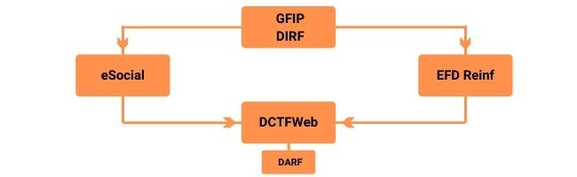

Saiba tudo sobre EFD-Reinf
Texto alterado em 02/2023.
A Escrituração Fiscal Digital de Retenções e Outras Informações Fiscais - EFD Reinf, é um dos módulos do projeto SPED, utilizado por pessoas físicas e jurídicas, que em conjunto com o eSocial e a DCTFWeb visam substituir a Guia de Recolhimento do FGTS e de Informações à Previdência Social – GFIP, e mais adiante, a Declaração do Imposto sobre a Renda Retido na Fonte - DIRF.

As informações relacionadas a área trabalhistas serão enviadas ao eSocial, já as informações tributárias irão ser declaradas na EFD Reinf. Logo após o envio das duas obrigações para a DCTFWeb, será apurada e gerada automaticamente o Documento de Arrecadação da Receita Federal - DARF, para pagamento dos tributos.
O que declarar na EFD Reinf
A EFD Reinf tem como objetivo simplificar e centralizar todas as informações das retenções destinadas às contribuições previdenciárias, retenção de imposto de renda e às retenções das contribuições sociais. Sobre a escrituração realizada através da obrigação, destacam se as seguintes informações:
- aos serviços tomados/prestados mediante cessão de mão de obra ou empreitada;
- às retenções na fonte (IR, CSLL, COFINS, PIS/PASEP) incidentes sobre os pagamentos diversos efetuados a pessoas físicas e jurídicas;
- aos recursos recebidos por/repassados para associação desportiva que mantenha equipe de futebol profissional;
- à comercialização da produção e à apuração da contribuição previdenciária substituída pelas agroindústrias e demais produtores rurais pessoa jurídica;
- às empresas que se sujeitam à CPRB (cf. Lei 12.546/2011);
- às entidades promotoras de evento que envolva associação desportiva que mantenha clube de futebol profissional.
Cronograma de implantação e a quem se aplica
Tem dúvida em qual grupo sua empresa se enquadra? Confira este link.
O prazo para que as empresas se adequem é:

- Grupo 1 (Maio de 2018): Empresas de Natureza Jurídica iniciadas com 2 (entidades empresariais) com faturamento superior a R$78 milhões no ano de 2016;
- Grupo 2 (Janeiro de 2019): Empresas de Natureza Jurídica iniciadas com 2 (entidades empresariais e NÃO optantes pelo Simples nacional) com faturamento inferior a R$78 milhões no ano de 2016;
- Grupo 3 (Maio de 2021): Empresas de Natureza Jurídica iniciadas com 2 (entidades empresariais e optantes pelo Simples nacional) e natureza jurídica iniciada com 3 ou 4, não pertencentes ao 1°, 2° e 4° grupos;
- Grupo 3 (Julho de 2021): Pessoas físicas, que compreende os empregadores e contribuintes pessoas físicas, exceto os empregadores domésticos. Conforme IN RFB nº 2.043/2021.
- Grupo 4 (Agosto de 2022): Empresas de Natureza Jurídica iniciada com 1 ou 5 (administrações publicas e organizações internacionais). Conforme IN RFB nº 2.080/2022.
Prazo de Entrega
A periodicidade da entrega das informações para o EFD Reinf será mensalmente com prazo até o 15º dia do mês subsequente. A não entrega das informações da EFD Reinf no prazo incorrerá em multa para o contribuinte previstas no Art. 57º da Lei 12.873/2013.
Quem precisa entregar a EFD Reinf
A entrega do EFD Reinf é obrigatória por diversos contribuintes, são eles:
- Todas as pessoas jurídicas que prestam e/ou contratam serviços realizados mediante cessão de mão-de-obra (colocam a disposição da empresa contratante, trabalhadores para realizar serviços contínuos);
- Pessoas jurídicas responsáveis pela retenção PIS, Cofins e CSLL;
- Pessoas jurídicas optantes pelo CPRB (desoneração da folha);
- Produtor rural pessoa jurídica e agroindústria;
- Associações desportivas que mantenham equipe de futebol profissional;
- Empresa que destinam recursos à associação desportiva que mantenha;
- Equipe de futebol profissional;
- Entidades promotoras de eventos que envolvam ao menos 1 associação desportiva que mantenha equipe de futebol profissional;
- Pessoas jurídicas ou físicas que tiveram retenção do IRRF.
Quem não precisa enviar a EFD Reinf
Conforme artigo 4º IN RFB nº 2.043/0021, somente estão dispensados do envio da EFD Reinf os contribuintes que não tiveram movimento ao respectivo período. Essa dispensa era concedida apenas às empresas do chamado 3º grupo, com a nova IN foi estendido a todas as empresas.
Importante ressaltar que, os contribuintes que não tiveram fato gerador, retenções, ou qualquer outra informação no período, nessa situação não precisam enviar o evento R-1000 e nenhum outro evento da EFD Reinf.
Estrutura do arquivo
Atual tabela de registros com os códigos e descrição dos eventos, considerando até a versão 2.1.1 da Reinf.
| Código | Descrição |
|---|---|
| R-1000 | Informações do contribuinte |
| R-1070 | Tabela de processos administrativos/judiciais |
| R-2010 | Retenção de contribuição previdenciária – serviços tomados |
| R-2020 | Retenção de contribuição previdenciária – serviços prestados |
| R-2030 | Recursos recebidos por associação desportivo |
| R-2040 | Recursos repassados para associação desportiva |
| R-2050 | Comercialização da produção por produtor rural PJ/agroindústria |
| R-2055 | Aquisição de produção rural |
| R-2060 | Contribuição previdenciária sobre a receita bruta - CPRB |
| R-2098 | Reabertura dos eventos periódicos |
| R-2099 | Fechamento dos eventos periódicos |
| R-3010 | Receita de espetáculos desportivos |
| R-4010 | Pagamentos/créditos a benefício para pessoa física |
| R-4020 | Pagamentos/créditos a beneficiário pessoa jurídica |
| R-4040 | Pagamentos/créditos a beneficiário pessoa não identificados |
| R-4080 | Retenção no recebimento (auto retenção) |
| R-4099 | Fechamento/reabertura dos eventos da série R-4000 |
| R-5001 | Informações de bases e tributos por evento |
| R-5011 | Informações de bases e tributos consolidadas por período de apuração |
| R-9000 | Exclusão de eventos |
| R-9005 | Bases e tributos - retenções na fonte |
| R-9015 | Consolidação - retenções na fonte |
*Os códigos destacados em negrito são referentes ao novo grupo das retenções incorporadas pela versão 2.1.1.
Detalhamento dos registros R-4000 (retenções) IR, PIS, COFINS e CSLL
Eventos de cadastros
R-1050 – Tabela de entidades ligadas
Nesse registro serão informadas as entidades ligadas ao contribuinte, tais como fundo de investimentos, clube de investimentos e sociedade em conta participação.
Eventos de Movimentação Periódicas
R-4010 – Pagamentos/créditos a beneficiário pessoa física
Nesse registro serão informados os pagamentos e créditos que os contribuintes efetuarem sobre as contratações de serviço sem vínculo empregatício (pessoa física) para o recolhimento do IR. Teremos um evento para cada registro do beneficiário. Já em relação as informações vinculadas ao IR sobre o trabalho serão entregues pelo eSocial.
R-4020 – Pagamento/créditos e beneficiário pessoa jurídica
Nesse registro novamente teremos um evento para cada registro de beneficiário, aonde serão declarados os pagamentos/créditos sobre os pagamentos de serviços de pessoas jurídicas.
R-4040 – Pagamento/crédito a beneficiários não identificados
No R-4040 serão informandos os pagamentos em que o beneficiário não será possível identificar, como por exemplo em situações em que não houver a emissão de documento fiscal.
R-4080 – Retenção no Recebimento
Conhecida como auto retenção, essa operação ocorre principalmente onde acontece o processo de condicionamento, como em agência de publicidade, operadoras de cartões, agência de viagens, são atividades que estão previstas na legislação e que efetuam a sua própria retenção, onde será transmitido pelos beneficiários dos rendimentos e não pelos contratantes.
Eventos de Controle
R-4099 – Fechamento/Reabertura dos eventos periódicos série R-4000
Será transmitido após todos os registros dos eventos periódicos serem encerrados ou será utilizado para reabrir um período de algum registro.
R-9005 – Bases e tributos, retenções na fonte e R-9015 – Consolidação das retenções na fonte
Esses registros são considerados os totalizadores, onde não são entregues pelos contribuintes, mas sim pela Receita Federal com o retorno das bases para os contribuintes.
Eliminação da DIRF
Conforme estabelecido pelo § 1º, do art. 3º, da Instrução Normativa RFB nº 2.043, de 12 de agosto de 2021, a Declaração do Imposto sobre a Renda Retido na Fonte - Dirf de que trata a Instrução Normativa RFB nº 1.990, de 2020, será integralmente substituída em relação aos fatos geradores ocorridos a partir de 1º de janeiro de 2025 pelas escriturações EFD-Reinf e eSocial.
Em razão do exposto, o Programa Gerador da Dirf 2025 (PGD Dirf 2025) deve ser utilizado para apresentação das informações relativas aos fatos geradores ocorridos durante o ano-calendário de 2024, independentemente de terem sido prestadas as mesmas informações por meio das escriturações mencionadas.
As informações relativas aos fatos ocorridos durante o ano-calendário de 2025 deverão ser prestadas apenas por meio das escriturações EFD-Reinf e eSocial, conforme disposto nos incisos I, II e III, do § 1º, do art. 3º, da Instrução Normativa RFB nº 2.043, de 2021, inclusive no que se refere aos eventos relativos à extinção de pessoa jurídica decorrente de liquidação, incorporação, fusão ou cisão total, de saída definitiva do país, e de encerramento de espólio.
Webinars
- 16/08/2023 - REINF 2.1: As mudanças da nova versão
- 29/09/2022 - EFD Reinf 2023: R-4000 x DIRF x DCTFWeb: Com ou sem emoção?
- 27/10/2021 - EFD Reinf 2022: Acompanhe o fim da DIRF com a nova Reinf
- 26/04/2018 - EFD-Reinf: Últimas Alterações e Desafios da Implementação
- 10/08/2017 - EFD-Reinf: O Complemento do eSocial para Empresas
Notícias recentes relacionadas
- 25/03/2025 | SPED EFD Reinf - MOD, v. 2.6 - Manual de Orientação ao Desenvolvedor da EFD-Reinf - Versão 2.6
- 20/01/2025 | SPED EFD Reinf - Mudanças no ambiente de produção restrita
- 26/11/2024 | SPED EFD Reinf - Nota Técnica nº 05/2024 - Redução das alíquotas de CPRB
- 31/10/2024 | SPED EFD Reinf - Nota Técnica nº 04/2024 - Retorno da alíquota de CPRB para empresas de transporte rodoviário coletivo de passageiros
- 09/10/2024 | SPED EFD Reinf - Consolidação das notas técnicas nos leiautes da Reinf
- 23/05/2024 | SPED EFD Reinf - Publicada Nota Técnica 02/2024
- 23/05/2024 | SPED EFD Reinf - Manual de Orientação ao desenvolvedor - versão 2.5
- 23/05/2024 | SPED EFD Reinf - Indicação “sem movimento” para série R-4000 da EFD-Reinf